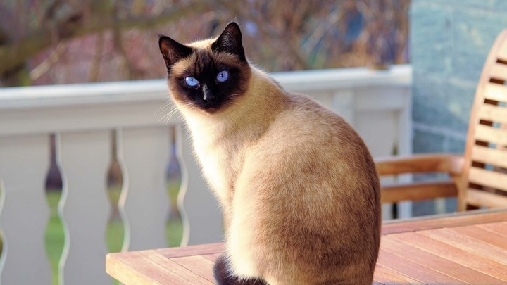
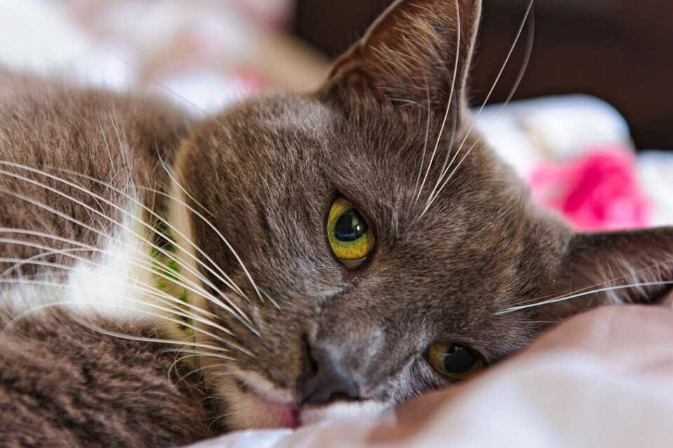
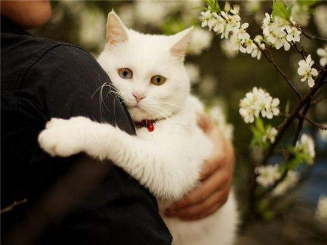
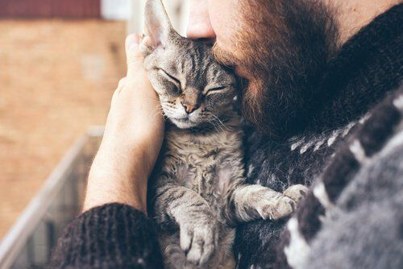

Независимость кошек — это миф. За последние пятьдесят лет они эволюционировали и стали очень зависимы от человека. Бывают случаи, когда кошка погибала из-за разлуки или после смерти своего хозяина: животное впадало в глубокую депрессию и просто отказывалось жить, при этом не имея никаких проблем с физическим здоровьем. В плане привязанности к человеку между собаками и кошками разница не такая уж большая, как многие привыкли считать. Кошки умеют любить, просто собаки — экстраверты и больше показывают, как сильно они вас любят. Ещё человек не всегда правильно воспринимает собачьи реакции: кажется, что собака такая любвеобильная и отзывчивая, раз прыгает вокруг вас и лает, а на деле она просто перевозбудилась. Кошки — немножко не от мира сего существа, они более закрытые, деликатнее демонстрируют свою привязанность, не любят перемены. Перемены ввергают кошек в стресс — и в целом они больше подвержены стрессу, чем собаки.
 У приютских кошек нередко бывает депрессия. Например, животное всю жизнь прожило дома, потом хозяева умерли или уехали — кошка впадает в депрессию. Вообще, психика приютской кошки зависит от условий, в которых она живёт, и от прошлого опыта. Часто приходится работать с так называемыми дичками — это животные, которые не имели положительного — или вообще никакого — опыта общения с людьми. Для кошки непонятное, как правило, представляет угрозу: если она видит что-то, что прежде никогда не встречала, она может испугаться. Поэтому основная работа в приютах — это социализация таких дичков. Ещё работа со страхами, триггерами, стрессом. Бывает такое, что у кошки острый стресс переходит в хронический. Например, если было какое-то травмирующее обстоятельство, из-за которого животное оказалось на улице, а потом его там обижали или били. У такого животного нужно уменьшать реактивность на человека, работать со снижением уровня стресса как такового. Животные в приютах обычно с эмоциональным багажом, но и в питомниках есть кошки с предысторией и негативным опытом. Угадать невозможно. Например, приходили покупатели смотреть котят и какого-то котёнка очень неаккуратно взяли или случайно наступили — так формируется негативный опыт.
 Возможных причин стресса у кошки — великое множество. Беспокойство может быть вызвано болью или болезнью, воздействием токсинов и инфекций, влияющих на нервную систему. К психологическим факторам относятся травмирующие события, недостаточная социализация и опыт плохого обращения и отсутствия заботы. Старение мозга тоже может стать причиной тревоги, особенно у пожилых кошек, страдающих от проблем с памятью или деменции. Боль в суставах у пожилых кошек тоже может стать источником беспокойства, проявляющегося в попытке спрятаться или отказе от использования лотка. К другим возможным причинам беспокойства у кошки относятся новая мебель и перестановка, появление в доме нового домашнего питомца или ребенка, и даже новый дом. Одной из наиболее распространенных форм тревожности является беспокойство, вызванное разлукой: ваша кошка становится нервной и подавленной, когда вы покидаете поле ее зрение или оставляете ее одну дома. Это особенно характерно для кошек, которые были выброшены на улицу, отданы в новое жилище или несколько раз передавались от владельца владельцу, отмечает портал PetMD. На кошек может влиять и обсессивно-компульсивное расстройство (ОКР), для которого свойственны чрезмерные, повторяющиеся действия. Причины ОКР у кошек доподлинно неизвестны, и в большинстве случаев заболевание характеризуется как расстройство психики, которое, однако, может быть спровоцировано стрессом, говорят авторы портала PetMD. Владельцы могут, сами того не желая, усугубить ОКР у питомцев, пытаясь успокоить их или уделяя им внимание во время нежелательного поведения. Следует отметить, что некоторые породы имеют генетическую предрасположенность к схемам поведения, характерным для обсессивно-компульсивного расстройства. Такое поведение чаще всего наблюдается у сиамских и других азиатских пород.
Беспокойного питомца заметить несложно. Выделяют следующие признаки и симптомы беспокойства у кошки:

К прочим симптомам относятся снижение аппетита, потеря веса, чрезмерное мяуканье, апатичность и возбужденное состояние, отмечает портал PetMD. ОКР можно распознать по чрезмерным, повторяющимся действиям, таким как употребление корма, сосание или жевание ткани, чрезмерное вылизывание, непрерывное мяуканье или вой и постоянная ходьба. Если беспокойство у кошки вызвано разлукой, то при вашем появлении кошка придет в норму, но может вновь забеспокоиться, если почувствует, что вы собираетесь уходить.

Самое главное, что вам необходимо знать, чтобы помочь встревоженной кошке, это то, что не следует наказывать и ругать ее за беспокойное поведение. Это только усугубит ее негативные представления и страх и ухудшит ситуацию. Ваша цель — помочь ей расслабиться и почувствовать себя в безопасности.
Как только вы заметили беспокойное поведение у животного, сразу запланируйте посещение ветеринарного врача, чтобы подтвердить наличие или отсутствие заболеваний или токсинов, вызвавших стресс у питомца. Кошки склонны скрывать боль от своих хозяев, поэтому обнаружить проблему будет нелегко и могут потребоваться анализ крови и другие исследования. Если окажется, что проблема вызвана болью или заболеванием, возможно, правильного лечения будет достаточно, чтобы вернуть вашего питомца к нормальному состоянию.
С другой стороны, ветеринарный специалист может обнаружить и психологическую причину проблемы, например невроз. В таком случае он, скорее всего, даст вам рекомендации относительно курса лечения.
В дополнение к успокоительным препаратам, снимающим беспокойство у кошки, ветеринарный врач, вероятно, посоветует вам инструктора или зоопсихолога, который поможет вам сформировать желательное поведение у питомца и избавиться от нежелательного.
Формирование желательного поведения предполагает выявление факторов страха у вашего кота и либо снижение восприимчивости к ним за счет неоднократного, безопасного взаимодействия с ними, либо их удаления из окружающей обстановки животного. Избавление от нежелательного поведения предполагает замещение нежелательного поведения желательным с формированием положительных ассоциаций, связанных с желательным поведением. Например, если ваша кошка начинает беспокоиться, чувствуя, что вы собираетесь уходить, приучите ее ложиться спать в это время и поощряйте лакомством или любимой игрушкой, когда она выполняет вашу просьбу. Со временем она будет ассоциировать ваш уход с поощрением и научится справляться с беспокойством. Главной целью приучения и формирования желательного поведения является показать кошке, что она в безопасности и может расслабиться.
Беспокойство не может пройти самостоятельно, и, скорее всего, только усугубится со временем, при этом нежелательное поведение станет еще более выраженным. Как и у людей, у животных хронический стресс сказывается на психическом здоровье. При продолжающемся действии стресс подавляет нервную систему и делает кошку более уязвимой для болезней, что, в свою очередь, усиливает стресс. Вдобавок у нее может развиться тяжелейшая депрессия, которая в сочетании с беспокойством усугубит проблемы с поведением. Для сохранения не только здоровья кошки, но и спокойствия в доме, необходимо как можно раньше начать лечение.
Если вы видите, что ваша кошка мяукает и проявляет беспокойство, не падайте духом. Благодаря вашей любви, терпению и готовности помочь она имеет все шансы на выздоровление и возвращение к полноценной здоровой жизни.